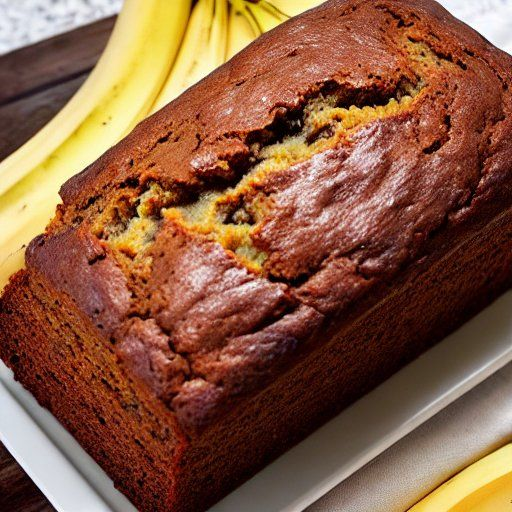

Pain aux bananes
Préparation: —
Cuisson: 60 minutes
Total: —
Ingrédients
-
2 t de farine

-
2 c. à thé de poudre à pâte
-
1/2 t de beurre non salé ramolli
-
1 t de cassonade légèrement tassée
-
2 œufs
-
1 c. à thé d'extrait de vanille
-
3 bananes mûres
-
1/2 t de lait
Instructions
Dans un bol, mélanger :
- 2 t de farine
- 2 c. à thé de poudre à pâte
Dans un autre bol, crémer le beurre. Ajouter la cassonade et battre jusqu’à ce que le mélange pâlisse. Ajouter les œufs, la vanille et mélanger.
- 1/2 t de beurre non salé ramolli
- 1 t de cassonade légèrement tassée
- 2 œufs
- 1 c. à thé d'extrait de vanille
Réduire en purée 3 bananes mûres et les incorporer au mélange précédent à l’aide d’une cuillère.
Ajouter les ingrédients secs au mélange en alternant avec 1/2 t de lait
Étaler la pâte dans un moule à pain de 23 × 13 cm (9 × 5 po). Cuire au four préchauffé à 180 °C (350 °F) pendant environ 1 heure.
Notes
Pour s'assurer que le gâteau soit bien cuit, piquer à l’aide d’un cure-dent ou d’une fourchette. Si le cure-dent ressort propre, c’est qu’il est prêt !